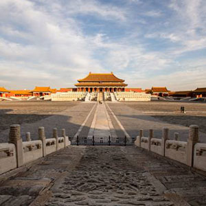
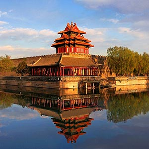
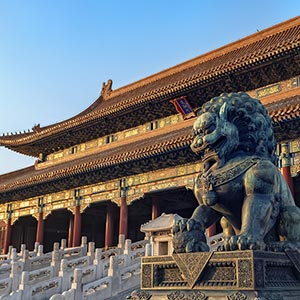
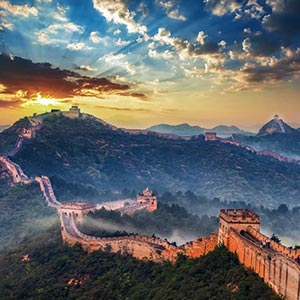
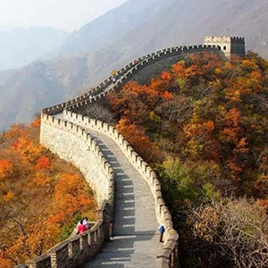
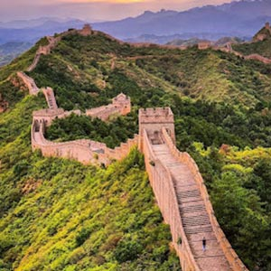
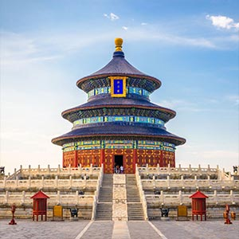
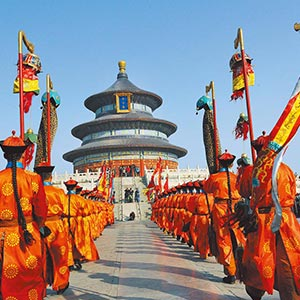
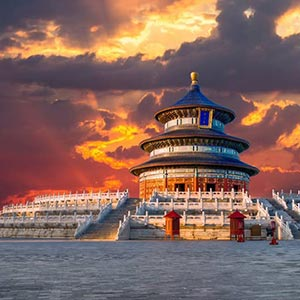

Destinations
Beijing is home to some of the most famous historical and cultural landmarks in the world. Below are key destinations that offer a deeper look into China’s imperial history, architecture, and modern development.
- Forbidden City
-

Palace 1 
Palace 2 
Palace 3 The Forbidden City served as the imperial palace for over 500 years during the Ming and Qing dynasties. It is one of the largest and best-preserved palace complexes in the world.
- Built in 1420 during the Ming Dynasty
- Contains nearly 1,000 historic buildings
- Located in the center of Beijing
- Great Wall of China
-

Great Wall 
Great Wall 2 
Great Wall The Great Wall stretches across northern China and was built to protect against invasions. It is one of the most iconic structures in world history.
- Mutianyu section is less crowded
- Badaling is the most visited section
- Some sections are over 2,000 years old
- Temple of Heaven
-

Temple of Heaven 1 
Temple of Heaven 2 
Temple of Heaven 3 The Temple of Heaven was used by emperors to pray for good harvests and is known for its symbolic architecture.
- Built in the 15th century
- UNESCO World Heritage Site
- Famous for its circular design
Travel Tips
- Best time to visit: Spring and Fall
- Wear comfortable walking shoes
- Public transportation is convenient and affordable